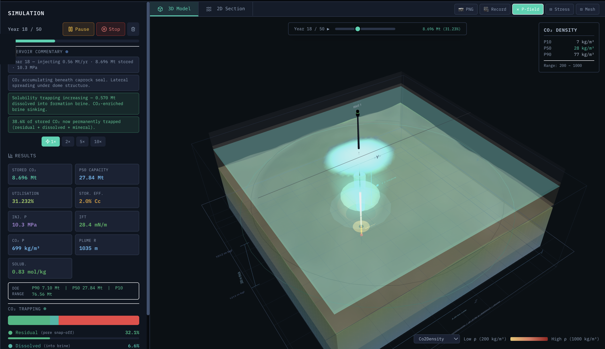

CarbonLens answers it in minutes — validated physics, quantified uncertainty and a regulator-ready report — free, in any modern browser.
Daniel T. Olagunju · MSc Research, UTP | Supervisors: Dr Okorie Ekwe Agwu · Dr Muhamad Aslam MD Yusof · Advisor: Dr Berihun Negash Mamo
01 The Problem
The world must store 6 gigatonnes of CO₂ a year by 2050. Today it stores 50 million.
Under 1% of what net-zero requires (IEA). The gap is not geology — suitable formations exist on every inhabited continent. The gap is project development speed: every project begins with a screening question, and answering it is locked behind one of two walls.
Enterprise simulatorsUS$80,000–200,000 per year in licences, dedicated workstations, weeks of specialist training. Disproportionate for early screening.
Free alternativesRequire MATLAB / Python expertise and significant setup — and produce no regulatory outputs.
“Projects stall not because the geology is unsuitable — but because the tools to evaluate it are inaccessible.”
02 The Solution
A complete screening studio in any browser. The end product is a report.
1
Setup
Project, country, jurisdiction
2
Define
Formation + 10-criterion screening gate
3
Simulate
Plume · pressure · geomechanics
4
Analyse
P10/P50/P90 · leakage · economics
5
Report
The deliverable

Sleipner Utsira, Year 18 of 50 — plume migration, pressure and trapping computed live in the browser. No installation, no backend, no licence — data never leaves your machine.
Permit Pre-Application — formatted for 5 regulatory frameworks: US EPA Class VI · EU CCS Directive · Australia NOPSEMA · Norway · Malaysia.
Days of document work — reduced to minutes.
03 The Evidence
Validated against 20 years of the world’s longest-running CO₂ storage project.
100%
7/7 metrics within accepted tolerance against published Sleipner monitoring data, 1996–2016 (±20% band)
Stored CO₂ (Mt): CarbonLens vs published Sleipner monitoring
All five time-steps PASS within ±20%. Slight systematic under-prediction is documented: the real Utsira is a nine-layer formation; CarbonLens is a screening-level bulk model. Sources: Chadwick 2004 · Boait 2012 · Furre 2017.
16
formation presets validated across five continents
5
regulatory frameworks with formatted permit output
20 yrs
of published field data matched at Sleipner
0
installation · backend · licence — open source (MIT)
Physics you can cite: Span–Wagner EOS · Duan–Sun solubility · Nordbotten composite pressure · vertically-integrated plume solver · Land–Killough hysteretic trapping · Leverett caprock seal · Mohr–Coulomb + MAIP geomechanics · Latin-hypercube P10/P50/P90 · MARS machine-learning interfacial-tension model (journal paper under review)
04 The Impact
Researchers & universities
A validated screening lab — no licence budgets, no IT procurement.
Consultants & developers
Rank a portfolio of storage candidates before committing simulation spend.
Regulators
Independently verify developer submissions in emerging CCS markets.
Emerging markets
Built for where tool access is most constrained — Southeast Asia, West Africa, the Middle East — with presets from Malaysia (Kasawari, Duyong, Malay Basin) to the North Sea.
Want the full picture? Read the white paper.
Physics, validation data, workflow and economics — everything on this poster, in full. Then run the studio yourself, or fork it on GitHub: github.com/carbonlens/carbonlens